声学发展史之——建筑声学 (Architectural Acoustics)
引言
专栏已经开通好几个月，却迟迟没有动笔。最近受到知友的鼓励，加上知乎创作者中心的开通，看到已经有几十万人看过我的知乎回答，备受鼓舞，决定好好经营一下专栏。初步计划除了写不同领域（建筑声学，虚拟声学，心理声学，NVH等）的声学发展史，声学基础知识，还会详细介绍虚拟声学 (Acoustic Virtual Reality)和可听化 (Auralization)的具体技术，Microflown质子振速传感器的理论以及在科研和工业界中（主要是汽车行业NVH）的应用，以及其他自己做过并且可写的方向，比如波束成型 (Beamforming)，麦克风阵列等。欢迎同道中人建议、指正和参与，共同探讨共同进步！
以上来自于我的知乎专栏《可以听的黑科技——声学》的第一篇文章。经营了半年多，赞数过3k，在知乎强推粉丝功能下关注者过11k——和微信公众号大佬比起来何止弱了那么1-nei-nei。所以也想来公众号玩玩，看一看更大的平台。毕竟每一篇十几个小时的心血，希望让更多的人看到。基本方向和我半年前的愿景差不多，主推声学的发展史、科普、工业应用、案例分析、发展前景等等。
话不烦絮，干货奉上。
背景
声学作为多领域交叉学科，从最初在音乐中的应用，到近代被广泛应用到电子电器，海洋，建筑，环境，汽车铁路航空，医学，地震，语音交互，已经从物理学的一个分支，发展成了与现实生活密不可分的一门重要学科。声学研究的最终目的，是为了人的听觉感官——耳朵服务，这决定了其地位之重要；而恰恰又是因为与人密切相关的特性，导致声学在制造业快速发展的时代并没有引起人的重视。直到制造业到达瓶颈，人，作为科技和制造的发起者和最终受益者，才被考虑进来。以人为本，人的主观感受和舒适性逐渐得以被重视，并且逐渐扩大市场影响力。因此需要有更多的人了解声学，这一古老而又充满活力的学科。
建筑声学 (Architectural Acoustics)，也称室内声学 (Room Acoustics，本文统称建筑声学)，是声学最传统的分支之一，一直到今天都是声学研究的重要课题。最先想到的就是音乐厅设计，这可能也是为数不多的在设计初期就把声学考虑进去的产品。由于人主要的活动都是在室内，所以除了音乐厅设计之外，居家卧室，工厂，电影院，图书馆，办公室（尤其是现在比较火的open-plan office噪声问题更大，所以很多人在提倡开放空间的同时也在考虑私人的声环境），学校，酒吧，以及汽车驾驶室等，都算在建筑声学的范畴之内。
建筑声学从时间线来划分，大概可以分为五个阶段：
- —— 1930：从物理声学到建筑声学初步成型
- 1930 —— 1960：早期科学探索
- 1960 —— 1980：大面积参数化
- 1980 —— 现在：电脑时代
- 1990 —— 现在：可听化(Auralization)
一、上古时期 —— 1930：从物理声学到建筑声学初步成型
作为物理学的分支，声学的发展较晚，直到19世纪下半页其物理理论基础才日趋完善。其中两位奠基人是两位德国人，分别为Hermann von Helmholtz（是的，就是大名鼎鼎的亥姆霍兹，声学领域最基础的公式就是以他命名），1862年发表了《作为乐理的生理学基础的音调感受的研究》(Die Lehre von den Tonempfindungen als physiologische Grundlage für die Theorie der Musik），以及John William Strutt, 3rd Baron Rayleigh（没错，他就是瑞利），1877年发表的《声学理论》(The Theory of Sound) [1]。
建筑声学真正的形成是以W.C. Sabine的出现为时间节点，他也被普遍认为是建筑声学的奠基人。是他首先在1900年左右提出了混响时间 (Reverberation Time)和材料吸声的概念以及相应的经验公式，开启了科学研究建筑声学的先河。他设计的波士顿交响乐大厅被认为是全世界最好的音乐厅之一。

📹 视频: 什么是混响？
Wallace Clement Sabine [Wikipedia]
 Wallace Clement Sabine
Wallace Clement Sabine
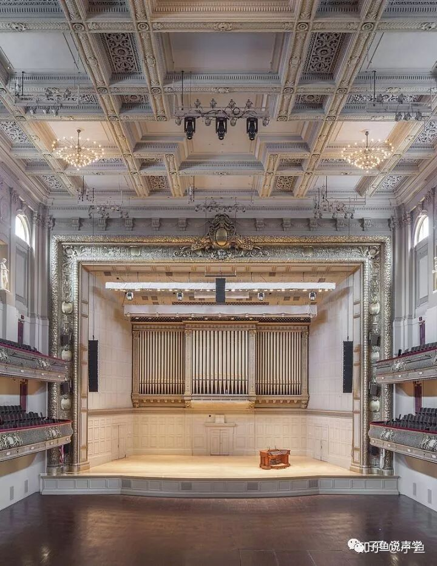
波士顿交响乐大厅 [Wikipedia]
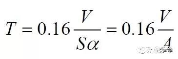
著名的Sabine's Equation：通过房间体积，表面积和材料吸声系数计算混响时间。时至今日，混响时间仍然是衡量房间声学优劣的重要指标
Sabine's Equation在30年代左右被Eyring和Norris通过理论证明，他们提出了更严谨的混响时间计算，也就是后来的Eyring's Equation。
二、1930 —— 1960：早期科学探索
在Sabine混响理论的基础之上，30年代之后陆陆续续的出现了一批德国声学家逐步完善建筑声学的理论和实验基础，如Erwin Meyer，Lothar Cremer，Vilhelm Jordan，Walter Reichardt等，建立了以尖劈为吸声结构的消声室 (1936年)，创立了早期的声学杂志——Akustische Zeitschrif(1936年，1951年更名为Acustica) 和Acta Acustica(1996年合并为Acta Acustica united with Acustica)。
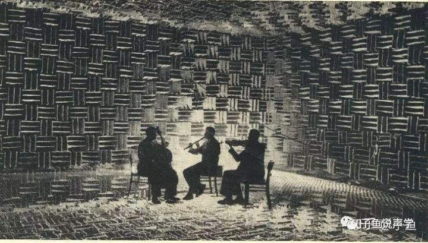
早期消音室 (Anechoic Chamber)
房间响应 (Room Response)也是在这一时期被L. Cremer（又是德国人。。。）提出，用来研究添加吸声材料对房间混响的影响。从此，房间响应逐渐被应用到建筑声学中来。
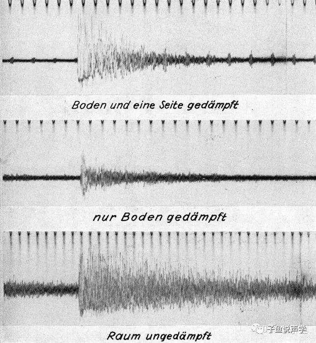
从上到下的房间响应信号分别是房间：有地板和一面墙添加阻尼；只有地板添加阻尼；无添加阻尼
值得一提的是，在这一期间 (1959年)，我国的声学之父马大猷先生参与了人民大会堂的声学设计。他于1939年在美国声学杂志JASA (The Journal of the Acoustical Society of America)发表的《矩形室内低频简正频率的分布》(Distribution of Eigentones in a Rectangular Chamber at Low Frequency Range)被认为是严格建筑声学的基础 [2]，并于60-70年代发明了微穿孔板结构并完善了设计和理论 [3]。
三、1960 —— 1980：大面积参数化
在这一时期，脉冲响应和传递函数被广泛应用到建筑声学，做出突出贡献的有Schroeder和Kuttruff。Schroeder freuqency也在这一时期被提出，根据房间大小和混响时间来判定从哪个频率点开始，房间模态开始大面积堆叠无法区分，呈现出随机性质 [4]。
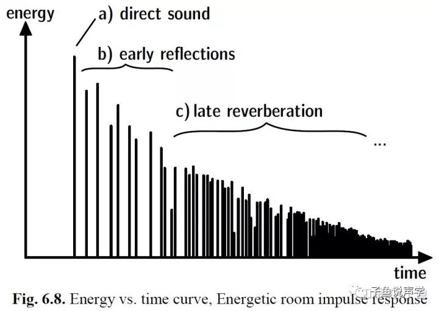
房间脉冲响应 [4]

从70年代开始，建筑声学进入了“参数化”时期，清晰度 (Clarity)，早期衰变时间 (EDT, Early Decay Time)，Lateral energy fraction (LEF)，Interaural cross correlation (IACC)，美国的Leo Beranek提出的衡量空间感知的强度 (Strength G)，Apparent Source Width (ASW)等等，并给出相应的计算公式。然而通过大量参数的提出和研究，人们发现适中的声级，混响时间和清晰度，并无法保证合格的声学效果。这位后面引入人的主观评价和可听化Auralization埋下了伏笔。
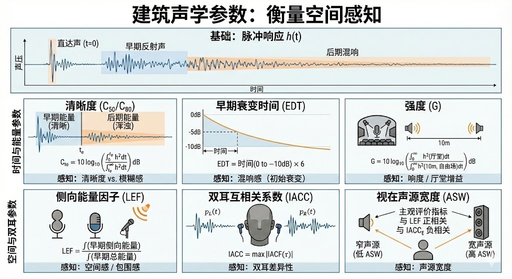
📊 建筑声学参数详解信息图表: 声音的建筑学：测量看不见的声音（Gemini deep research生成，然后生成infographic）
四、1980 —— 现在：电脑时代
随着电脑的发展，人们终于不用再手动计算傅里叶变换分析频谱，也可以逐渐摆脱各种大型测试仪器，比如下图的B&K level recorder。我在博士期间带实验课的时候，依然用的这款仪器测量房间混响时间。纯analog机械能转换，仪器输出端连接的笔在纸条上的路径记录房间能量的decay，再通过尺子测量，计算混响时间。虽然现在看好像弱爆了，但是不得不感叹当年的机械之美，以及其带来的非常简单粗暴但是又异常直观清晰的对知识的理解。
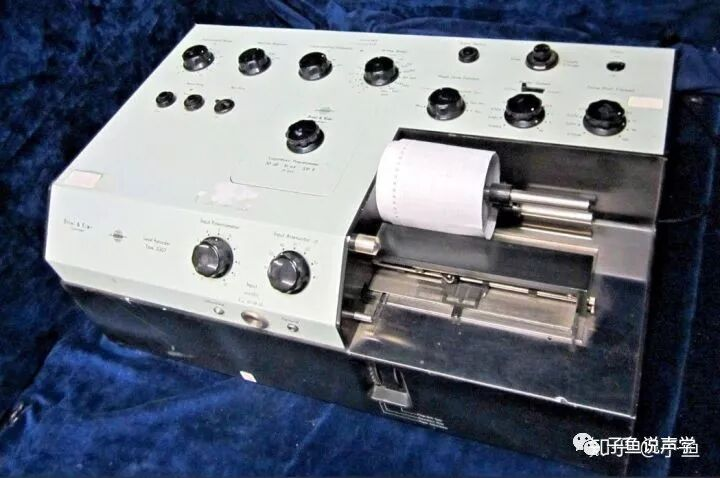
B&K level recorder [5]。第一台1949年投放市场，连续畅销25年
人们终于可以在建筑设计的初期就可以介入声学诉求，各种仿真软件也走入市场，比如CATT，EASE，ODEON等直到现在也是比较普遍的建筑声学软件。这些声学软件优势很明显，可以快速计算各种建筑声学参数，近些年也增加了Auralization功能，既能客观分析物理参数，还能进行主观评价；同时局限性也很明显，大部分软件都是基于几何声学，也就是在前面提到的Schroeder frequency只上的频率区域是准确的，只把声波等效成了没有相位只有强度的粒子，而忽略了低频的波动性。因此，主攻低频仿真的数值声学 (Numerical Acoustics)随着计算机功能的强大也逐渐兴起，比如常用的有限元/边界元 (FEM/BEM)，时域有限差分 (Finite-Difference Time-Domain, FDTD)，以及近些年的Pseudo-spectral Time Domain (PSTD)和Discontinuous Galerkin (DG)。然而这些数值方法距离大规模商用还有待计算机计算能力的进一步提升。
在电脑建模时，需要考虑声音传播的三要素，即声源，传播途径和接受者。
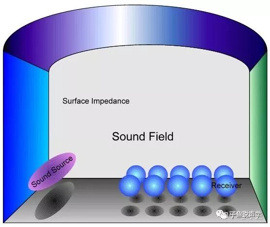
典型建筑声学模型 [4]
对于声源，要考虑：
- 声源的本身体积是多少？
- 是否为多声源？声源的空间位置？
- 声源的指向性 (Directivity)？
对于传播途径，要考虑：
- 房间的3D建模
- 复杂表面
- 材料表面阻抗 (Impedance)
- 衍射，散射系数等除了镜面反射的声学现象（针对几何声学，数值声学计算全声场无需单独考虑各种声学现象）
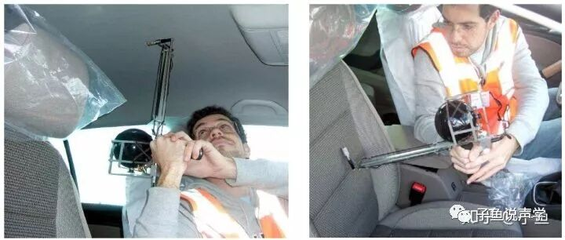
Microflown现场测材料阻抗的Impedance gun [6]
对于接受者，要考虑：
- 接受者的空间体积大小和方位
- 双耳效应
由于诸多因素都会引起仿真结果的bias，在90年代中期声学界展开了第一轮“Round Robin”测试，用来对比建筑声学的仿真结果 [7]。
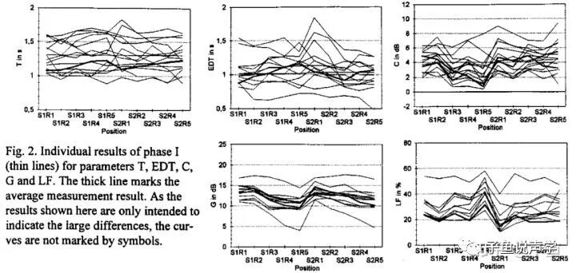
第一轮Round Robin结果 [7]。可以看出结果的bias是非常大的。精确的声学仿真道路依然任重而道远
五、1990 —— 现在：可听化(Auralization)
现在我们终于迈入了现代化。“可听化”一词并不是可以听话的意思，而是与视觉的可视化 (Visualization)相对应的词汇。举个最简单的例子，当你在电脑里面建了一个房间的声学模型，从前你只可以用眼睛看到模型计算出来的各个参数，而现在有了Auralization，你还可以用耳朵去听这个房间的声音效果——就像在真实世界一样。Auralization经常和虚拟现实结合起来，把现实世界的声环境转到虚拟世界里，结合Visualization，让人身临其境。比如你在打游戏，看到在房间里，前面有个人在打枪，那么你听到的声音一定要从前边来，才能保证良好的游戏体验。而这个声音是一定要通过严谨的声学计算生成的。
像我前面提到的，声音传播有三要素。很自然，当把声音转移到虚拟世界时，也要从这三方面考虑。
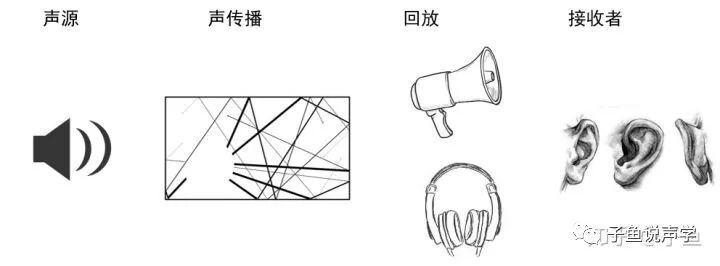
Auralization步骤
以我自己的博士课题为例，我做的就是声源部分，主要研究移动声源的建模。把现实生活中能跑的东西（主要是汽车火车等交通工具）建模，放到虚拟现实中。通过在虚拟现实中模拟某种城市规划或者交通布局带来的交通工具噪声，让决策者和普通居民都能参与进去并对其评价，而不仅仅是盯着一堆冷冰冰的数字和频谱图，从而建造让居民满意的声环境。Auralization真正能做到“以人为本”，紧密结合声学和人，最大化的让人参与其中。
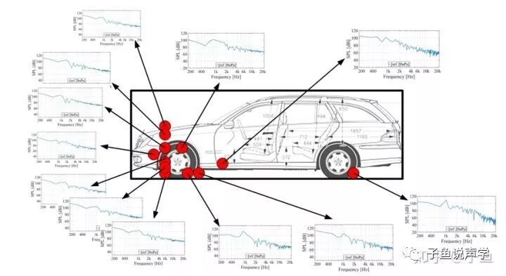
汽车声源建模
下面几个例子可以很直观地感受Auralization到底在干嘛（建议佩戴耳机，听双耳效果）。当你随着虚拟人的脚步，走在不同的地方、面对不同方向的时候，听到的东西是不一样的。在声源一定的前提下，房间布局会影响不同位置接收到的信号，而两个耳朵接收到的信号差又让人能够定位声源位置——别忘了人是佩戴两个声学传感器的生物。这种3D的声学体验是音乐厅设计师的梦，能够帮助他们更精确更贴心的设计，确保每个角落的观众的听音体验最优化。
音乐厅的声学可听化 [8]
教堂的声学效果，听和尚唱歌 [8]
飞机起降噪声的直观感受 [8]
*以上三个视频均在亚琛工业大学的CAVE虚拟现实系统里完成 [9]
Auralization这一概念起始于1994年，在20世纪末开始兴起，成绩比较突出的是芬兰Aalto的Aalto Acoustics Lab，以及德国亚琛的Institute of Technical Acoustics和柏林工业大学的Technische Akustik。2007年，亚琛的Michael Vorländer教授的Auralization[4]一书可以看做是这门新兴声学分支的奠基之作。以虚拟现实为依托，详细介绍了Auralization的基础知识，关键技术和应用。
现在的Auralization和VR相结合更多地用在了游戏产业，做得比较成功的是Facebook Reality Lab (前Oculus)，在其他产业并没有得到广泛关注，更多地停留在概念和科研界。Auralization本身也有很多没有解决的问题，比如想达到实时效果，声传播模型还停留在并不怎么准确的简化版几何声学，回放方面还不能满足多人接收者，大声源和移动声源的建模还不成熟等等。Auralization在以后的文章里我会详细讲，在这里就不再赘述。
声学和最新科技的结合，及其带来的全新发展视角和以人为本的考量，让建筑声学这一传统声学学科再次焕发青春，并充满潜在的商业机遇。
参考
[1]. 燕翔，清华大学，kknews.cc/culture/rqlay.
[2]. zh.wikipedia.org/wiki/%.
[3]. D.-Y Maa （马大猷）, Theory and design of microperforated-panel sound-absorbing construction, Sci. Sin. XVIII, 55–71, 1975.
[4]. Vorländer, Michael. Auralization: fundamentals of acoustics, modelling, simulation, algorithms and acoustic virtual reality. Springer Science & Business Media, 2007.
[5]. Bruel & Kjaer 2307 Level Recorder wtih Logarithmic Potentiometer Plug-In "AS-IS" | eBay
[6]. Tijs, E. Study and development of an in situ acoustic absorption measurement method. (2013). In-situ Absorption - Microflown
[7]. Vorländer, M. (1995, June). International round robin on room acoustical computer simulations. In15th Intl. Congress on Acoustics, Trondheim, Norway(pp. 689-692).
[8]. Institute of Technical Acoustics
[9]. aixCAVE at RWTH Aachen University
封面图片: S. Pelzer, Diplom Thesis. Interactive real-time auralization of complex virtual environments. RWTH Aachen University
本文首发于我的知乎专栏《可以听的黑科技——声学》：
<...
转发、点赞、关注光荣，
未经作者允许的转载可耻
...>
作者: 子鱼
发布时间: 2026-01-06 18:45:35
原文链接: https://mp.weixin.qq.com/s/FZW-fpCF3SFF0xA2nECRZw